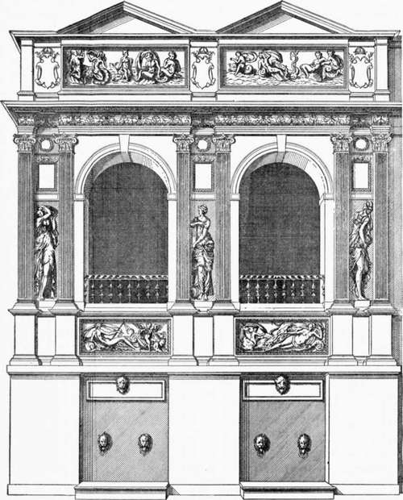
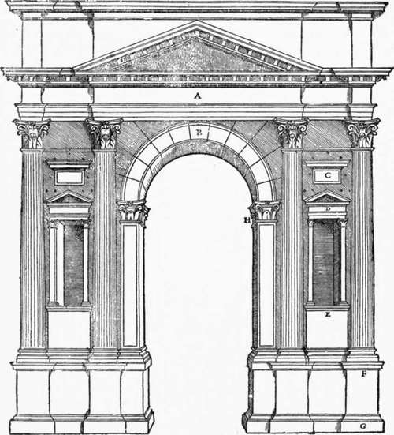

Chapter XII. Lescot And De L'Orme
Description
This section is from the book "Character Of Renaissance Architecture", by Charles Herbert Moore. Also available from Amazon: Character of Renaissance Architecture.
Chapter XII. Lescot And De L'Orme
Among the architects of the later French Renaissance Pierre Lescot and Philibert De l'Orme were preeminent. The change which they effected gave the French architecture a more marked neo-classic dress, yet still without wholly eliminating its native character. This change was of course analogous to that which had been wrought in Italy by the later designers of that country, but the resulting forms in France were different from those of the Italian art, and were to the last peculiarly French, though, as before remarked (p. 179), not expressive of the French genius in its integrity. This was entirely natural. The architecture of a people inevitably retains much of its original character while yielding to foreign influences. It had been so with the Italian art of the Middle Ages when it was subjected to the Gothic influence, and it could not be otherwise with the French art of the sixteenth century when the later Renaissance wave swept over it.
Lescot and De l'Orme came strongly under the influence of Vignola and Palladio, their Italian contemporaries, and they fully accepted the Italian belief in the superiority of the neo-classic principles of design to those which had given rise to what they considered the architectural barbarisms of the Middle Ages. Lescot, says Berty,1 " was one of the first French architects to employ the ancient style in its purity," and De l'Orme, according to Milizia,2 " exerted all his industry to strip architecture of her Gothic dress and clothe her in that of ancient Greece."
Lescot is said to have designed the Fountain of the Nymphs, now known as the Fountain of the Innocents,3 in Paris, in collaboration with Goujon, the sculptor. In this work there is nothing whatever of mediaeval character. In its present condition it is, indeed, very different from what it was originally. It first (1550) stood on the corner of two streets with a facade of two bays on one street and a return of one bay on the other. In 1788 it was taken down and reerected in the square of the Innocents on a square plan, a fourth fagade being then added. Figure 116, from an engraving by Du Cerceau,1 illustrates the original design, each bay of which is nothing more than a reproduction of the scheme of a Roman triumphal arch, with a short pediment over the attic. The whole structure is raised on a high basement of plain character with lions' heads for water-spouts. Such pure imitation of the antique does the architect little credit as a designer, and it is hard to understand how such works could have been regarded as monuments of a regenerating art. The sculptures by Goujon which adorn this structure have, in my judgment, no monumental qualities, nor any notable merits of design. Their movements are awkward, and their lines ill composed. The influence of the decadent Italian art is marked in them, without any new qualities that should entitle them to distinction.
Fig. 116. — Du Cerceau's engraving of the Fountain of the Nymphs.
1 Adolphe Berty, Les Grands Architectes -Francais de la Renaissance, Paris, 1860, p. 70. 2 Milizia, Memorie, vol. i, p. 404. 3 Berty, op. cit., p. 71.
1 Les Plus Excellents Bastiments de France, plate 69.
Little is known of the early training of Lescot beyond what is told in a poem by Ronsard,1 from which we learn that in his youth he had occupied himself with painting and geometry, and that at the age of twenty he began the study of architecture. He does not appear to have visited Italy, and his knowledge of ancient art must, therefore, have been acquired at second hand; very likely in great part through Serlio's book which had been published in 1537. A woodcut (Fig. 117) on page 127 of this book,2 giving the design of an ancient Roman arch in Verona, might have served as a model for the Fountain of the Nymphs. He must also have come in contact with Serlio himself, who in 1541 had been called into the service of the French king.
The capital work of Lescot was the early part of the new Louvre, begun about 1546 on the site of the old castle of Philippe Auguste which Francis I had demolished in order to rebuild in the new style. The new scheme was apparently intended to cover almost precisely the same area that had been occupied by the mediaeval structure, and the old foundations were to be utilized in the new building. Thus in conformity with the older castle Lescot's design embraced a square court; but only a part of this project was actually carried out, namely, the wings on the south and west sides. And of these the south wing afterward suffered a damaging alteration by the architect Lemercier who enlarged the court to about four times the area that Lescot had intended. Thus the only part of Lescot's work which has survived substantially intact is that part of the existing west side which extends from the southwest angle to the great western pavilion. This portion is figured by Du Cerceau,1 and save for some alterations in the timber roof the existing fabric agrees with his print.
1 The lines of this poem which relate to Lescot are quoted by M. Berty in op. cit., pp. 66-68.
2 Regolc Generate di Architettura di Sebasliano Serlio.
Fig. 117. — Roman arch, Serlio.
Continue to:
- prev: Architecture Of The Early Renaissance In France. Part 4
- Table of Contents
- next: Lescot And De L'Orme. Part 2